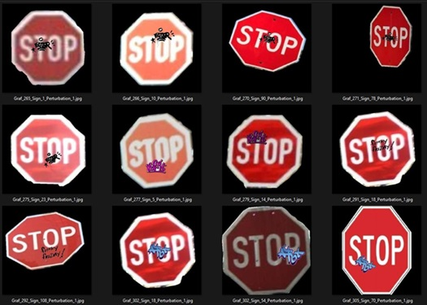

Creating the Synthetic Training Data
We used Wolfram Mathematica to synthesize the training data to be used in the convolutional neural network.
Some of the key Mathematica functions that we wrote to accomplish this goal included:
preprocess: A function that performs a few preprocessing tasks on an input image to create a good
mask. In this case, we included a binarize operation and an opening operation with a radius 3 disk matrix as
the morphological element.
scaleToFit: A function that rescales a source image so that it is guaranteed
to fit within a ROI mask of a destination image.
getViablePlacements: This helper function finds all viable (x,
y) pairs such that when a source image is placed at point (x,
y) on the destination image, all four of the source image corners
are touching a foreground part of the mask. It is crucial to ensuring that the graffiti is placed entirely
on the stop sign and not on the background.
placeImages: This function creates valid compositions of the source image on the
destination image.
The criterion for validity is that all four corners of the source.
image touch the foreground of the destination image. These valid placements are computed in
getViablePlacements.
perturb: This function takes in a single image and outputs several procedural perturbations of it.
Blur, noise, contrast, brightness adjustments.
The end result of the training data generation process calls a composition on all of these functions on stop
sign and graffiti images to create many images similar to the examples below:

Convolutional Neural Network Implementation
From here, we decided to use a Convolutional Neural Network to perform the binary classification. The model
definition, training and testing are implemented in cnn-classifier.ipynb in the codebase section of the
repository.
The actual implementation of the neural network is fairly simple, comprising only a few helper functions and
lines of Python code. (First image)
The subsequent images contain Python code for, in order:
random_sample_files: This helper function was written to allow us to randomly select a sample of files
from a directory. This allowed us to train a "small model" on a subset of the full synthetic training data
(this was done for compute resource efficiency).
Extract randomly sampled training data and train the model: This code block calls random_sample_files to extract random files from the large "images" folders, concatenates the images to form X, and creates labels variable y based upon 1- and 0- labels (binary classification).
Assess model performance: This code creates a confusion matrix and calculates true positive rate, true negative rate, false positive rate, and false negative rate to assess the model's performance on testing images. It prints out these values and plots the confusion matrix using Seaborn.
Next, we will discuss the results attained from this "small model" in the Results
tab.